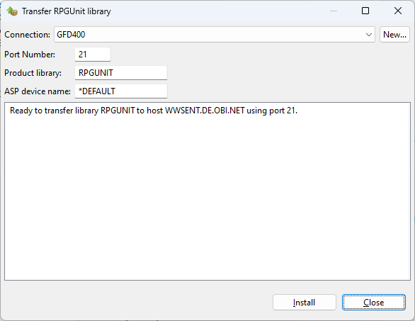

The possible values are:
| *API | Run test procedures in the order provided by the system API. |
| *REVERSE | Run test procedures in reverse order. |
The possible values are:
| *JOBD | The initial library list part of the specified job description is used to execute the unit test suite. |
| *CURRENT | The current library list is used to execute the unit test suite. |
The possible values are:
| *DFT | The library of the unit test suite (service program) is searched for job description 'RPGUNIT'. |
| name | The name of the job description that is used to set the library list of the unit test suite. |
The possible values are:
| *LIBL | All libraries in the user and system portions of the job's library list are searched until the first match is found. |
| name | Specify the name of the library to be searched. |
The possible values are:
| *BASIC | Full detail for failures and errors, no detail for successes. |
| *ALL | Full detail in all cases. |
The possible values are:
| *NONE | Does not create any report. |
| *ERROR | Creates a report in case of failures and errors, only. |
| *ALLWAYS | Creates a report regardless of the test result. |
This option is useful if the test suite calls OPM programs, which do not set the *INLR indicator.
The possible values are:
| *NO | Resources are not reclaimed. |
| *ALLWAYS | Resources are reclaimed after each test case and at the end of the test suite. |
| *ONCE | Resources are reclaimed at the end of the test suite. |
You can use the following replacement variables to produce the name of the XML stream file on the fly:
Command parameters
| <TESTPGM> | Name of the test test suite. |
| <TESTLIB> | Name of the library where the test suite is stored. |
| <MSECONDS> | Microseconds of current time. |
Function strftime()
| %C | Century number [00-99], the year divided by 100. |
| %d | Day of the month [01-31]. |
| %F | ISO Date Format, same as %Y-%m-%d. |
| %g | 2 digit year portion of ISO week date [00,99]. |
| %H | Hour in 24-hour format [00-23]. |
| %I | Hour in 12-hour format [01-12]. |
| %j | Day of the year [001-366]. |
| %m | Month [01-12]. |
| %M | Minute [00-59]. |
| %p | AM or PM string. |
| %R | 24-hour time format without seconds, same as %H.%M. |
| %S | Second [00-61]. |
| %T | 24-hour time format with seconds, same as %H.%M.%S. |
| %u | Weekday [1,7]. Monday is 1 and Sunday is 7. |
| %U | Week number of the year [00-53]. Sunday is first day of week. |
| %V | ISO week number of the year [01-53]. Monday is first day of week. |
| %w | Weekday [0,6], Sunday is 0. |
| %W | Week number of the year [00-53]. Monday is first day of week. |
| %y | 2 digit year [00,99]. |
The table above shows some but not all variables of the strftime() function. Some replacement variables, which are not listed here, are not allowed, because their values may produce an invalid path.
| *TYPE1 | Legacy format of iRPGUnit <= v5.1.0.r. Element <failure> (call stack) is append as text.This format only supports the Jenkins JUnit plug-in. |
| *TYPE2 | New format of iRPGUnit >= v6.0.0.r. Element <failure> (call stack) is append in Json format.This format supports both, the Jenkins JUnit plug-in and the VS Code IBM I Testing extension. |
|
Press the upload button to open a dialog for uploading the RPGUnit library to your host system using FTP file transfer: | |
|  | ||
| Press the [Install] button to open a sign-on dialog and to start the upload process. | ||
The possible values are:
| *NONE | Service programs are not validated when selected for execution. |
| *TEXT | The object description of the selected service program must start with 'RPGUnit' or iRPGUnit (case insensitive). |
| *ATTRIBUTE | The user defined attribute of the service program is checked for 'RPGUnit' or iRPGUnit (case insensitive). That is the preferred option, but does not work for all RDi versions. See APAR SE55976 for details. |
The user defined attribute of the test suite service program is automatically set to 'RPGUNIT', when the service
program is created by RUCRTRPG.
*SRCSTMT to the RPG source member.
| Do not capture anything | - | No messages are captured from the job log. |
| Capture escape messages on unexpected errors | - | Escape messages are captured from the job log, when a test case ended with errors. |
| Capture all messages on unexpected errors | - | All messages of the job log are captured, when a test case ended with errors. |
| Capture all job log entries | - | All messages of the job log are captured at any time. |
| Format job log entries | - | Specifies whether or not the job log entries are formatted when appended to the Commands Log view. |